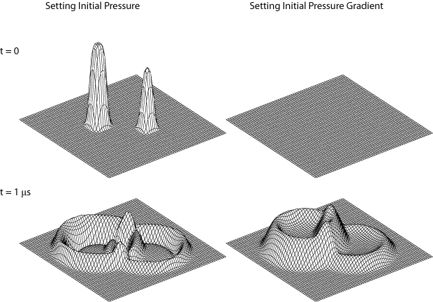

Setting An Initial Pressure Gradient Example
This example demonstrates how to set an initial pressure gradient using kspaceSecondOrder. It builds on the Comparison Of Modelling Functions Example.
Contents
Defining the source properties
The function kspaceSecondOrder allows initial conditions for both the initial pressure and its temporal gradient to be defined. The initial conditions are defined as a matrix of numeric values the same size as the computational grid. The initial pressure is assigned to source.p0, while the initial pressure gradient is assigned to source.dp0dt.
In this example, makeDisc is used to create an initial source distribution of two small discs with different diameters. This is first assigned to the p0 field of the source structure, then to the dp0dt field, and then to both fields. The optional input 'MeshPlot' is set to true to allow a 3D visualisation of the pressure field. If 'PlotFrames' is set to true the individual frames are spawned in new figures. A plot of the pressure field at two different values of t is shown below.
